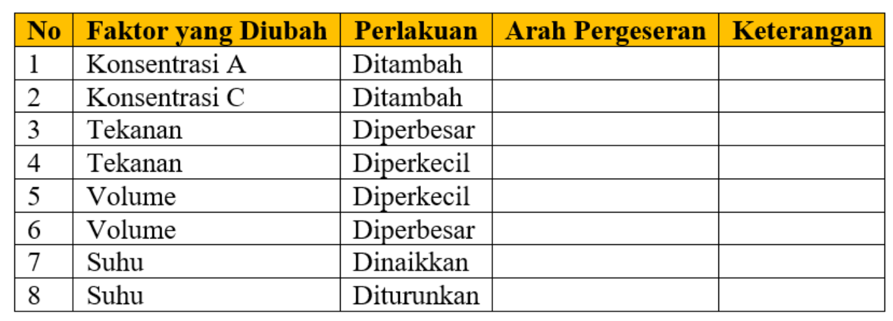

MENCOBA
Virtual lab ini digunakan untuk mengamati pengaruh perubahan konsentrasi, suhu, tekanan, dan volume terhadap arah pergeseran kesetimbangan pada reaksi:
2A(g) + B(g) ⇌ 2C(g) (eksoterm)
Ikuti petunjuk berikut:
- Perhatikan kondisi awal sistem (setimbang).
- Ubah salah satu faktor menggunakan slider (suhu, konsentrasi A, konsentrasi C, tekanan, dan volume)
- Amati perubahan warna dan jumlah partikel.
- Perhatikan keterangan status (bergeser ke kanan, bergeser ke kiri, dan setimbang)
- Catat hasil pengamatan pada tabel yang telah disediakan.
- Kembalikan sistem ke kondisi awal sebelum mencoba faktor berikutnya.
- Lakukan setiap percobaan secara teliti dan ubah satu faktor dalam satu waktu.
👩🏻🔬 Tahap 1 – Kondisi Awal
• Biarkan semua slider pada posisi awal
• Jalankan simulasi dan amati posisi kesetimbangan sistem
• Perhatikan warna indikator dan teks arah pergeseran yang muncul
• Identifikasi apakah sistem berada pada kondisi setimbang (warna kuning) atau bergeser
• Catat warna indikator, arah pergeseran, serta nilai slider sebagai data awal
👩🏻🔬Tahap 2 – Pengaruh Konsentrasi
• Tambahkan konsentrasi A menggunakan slider
• Amati perubahan warna indikator dan teks arah pergeseran
• Perhatikan perubahan jumlah partikel dalam wadah hingga stabil kembali
• Catat warna indikator akhir dan arah pergeseran yang terjadi
• Kembalikan sistem ke kondisi awal
• Tambahkan konsentrasi C dan ulangi pengamatan yang sama
• Bandingkan respons sistem pada penambahan pereaksi dan produk
👩🏻🔬Tahap 3 – Pengaruh Tekanan
• Tingkatkan tekanan sistem menggunakan slider
• Amati perubahan warna indikator dan teks arah pergeseran
• Perhatikan distribusi partikel dalam wadah hingga kondisi stabil
• Catat warna indikator dan arah pergeseran yang terjadi
• Turunkan tekanan dan ulangi pengamatan
• Bandingkan hasil pada tekanan tinggi dan rendah
👩🏻🔬Tahap 4 – Pengaruh Volume
• Perkecil volume sistem menggunakan slider
• Amati perubahan warna indikator dan arah pergeseran kesetimbangan
• Perhatikan perubahan kepadatan partikel dalam wadah
• Catat warna indikator serta arah pergeseran
• Perbesar volume dan lakukan pengamatan ulang
• Bandingkan respons sistem pada volume kecil dan besar
👩🏻🔬Tahap 5 – Pengaruh Suhu
• Naikkan suhu sistem melalui slider
• Amati perubahan warna indikator dan arah pergeseran kesetimbangan
• Perhatikan perubahan jumlah pereaksi dan produk hingga stabil
• Catat warna indikator dan arah pergeseran yang terjadi
• Turunkan suhu dan ulangi pengamatan
• Bandingkan hasil pada suhu tinggi dan rendah
👩🏻🔬Tahap 6 – Analisis
• Bandingkan hasil semua percobaan berdasarkan warna indikator
• Identifikasi pola hubungan antara perubahan slider dan arah pergeseran
• Hubungkan hasil pengamatan dengan Prinsip Le Chatelier
• Gunakan warna indikator sebagai bukti visual untuk menjelaskan pergeseran
• Tarik kesimpulan umum tentang respons kesetimbangan terhadap gangguan
Catat seluruh hasil pengamatan pada buku tulis sesuai format tabel berikut:

Buatkan Kesimpulan terkait percobaan ini:
Setelah menyelesaikan seluruh kegiatan dan mengisi tabel pengamatan pada buku tulis:
- Pastikan jawaban ditulis lengkap, rapi, dan mudah dibaca.
- Foto hasil pekerjaan dengan pencahayaan yang jelas (tidak buram dan tidak terpotong).
- Pastikan seluruh tabel dan jawaban terlihat utuh dalam foto.
- Unggah (upload) foto tersebut melalui Google Form yang telah disediakan.
- Beri nama file dengan format:
- Nama_Kelas_No. Absen (Contoh: Vika_XI3_19)
Setelah menyusun pertanyaan dan membangun penalaran konseptual, tahap mencoba mengarahkan anda untuk melakukan penyelidikan ilmiah melalui virtual lab. Pada tahap ini, kamu memanipulasi variabel konsentrasi, suhu, tekanan, dan volume untuk menguji bagaimana sistem kesetimbangan merespons gangguan.
Dalam sains, eksperimen merupakan cara utama untuk memperoleh bukti empiris dan menguji prediksi teori. Virtual lab berfungsi sebagai representasi simulatif dari eksperimen nyata yang memungkinkan ilmuwan mengamati hubungan sebab–akibat secara terkontrol.
🔬 Eksperimen sebagai Sumber Bukti Ilmiah
Melalui virtual lab reaksi:
2A(g)+B(g)⇌2C(g) (eksoterm)
kamu melakukan manipulasi variabel satu per satu untuk memperoleh data yang valid. Praktik ini mencerminkan metode eksperimen ilmiah yang menekankan:
• pengendalian variabel
• pengulangan percobaan
• pengamatan perubahan sistem
• pencatatan data sebagai bukti empiris
Hal ini menunjukkan bahwa pengetahuan ilmiah tidak hanya berasal dari teori, tetapi juga dari hasil eksperimen terkontrol.
⚗️ Jejak Ilmiah Eksperimen Kesetimbangan
Dalam sejarah perkembangan kimia, ilmuwan melakukan eksperimen serupa dengan mengubah kondisi sistem kesetimbangan dan mengamati responsnya. Dari eksperimen tersebut ditemukan bahwa:
• perubahan konsentrasi memengaruhi komposisi sistem
• perubahan tekanan memengaruhi jumlah mol gas dominan
• perubahan volume memengaruhi frekuensi tumbukan partikel
• perubahan suhu memengaruhi arah reaksi endoterm atau eksoterm
Virtual lab merepresentasikan proses ilmiah tersebut dalam bentuk simulasi sehingga peserta didik dapat mengalami proses investigasi yang sama.
🧠 Menguji Prediksi Teori melalui Percobaan
Pada tahap mencoba, kamu tidak sekadar mengamati, tetapi juga menguji prediksi yang telah dibuat pada tahap menanya dan menalar, seperti:
• penambahan pereaksi menyebabkan pergeseran ke kanan
• peningkatan tekanan menggeser ke sisi mol gas lebih kecil
• perubahan volume memengaruhi arah kesetimbangan
• kenaikan suhu menggeser reaksi eksoterm ke kiri
Proses ini mencerminkan karakteristik NoS bahwa teori ilmiah harus dapat diuji melalui eksperimen.
📊 Peran Data dalam Pembentukan Pengetahuan
Pencatatan warna indikator, jumlah partikel, dan arah pergeseran menunjukkan bahwa data observasi menjadi dasar dalam menarik kesimpulan ilmiah. Data dari berbagai percobaan kemudian dianalisis untuk menemukan pola hubungan antara gangguan dan respons sistem.
Hal ini menggambarkan bahwa konsep pergeseran kesetimbangan dan Prinsip Le Chatelier lahir dari akumulasi data eksperimen, bukan dari satu percobaan tunggal.